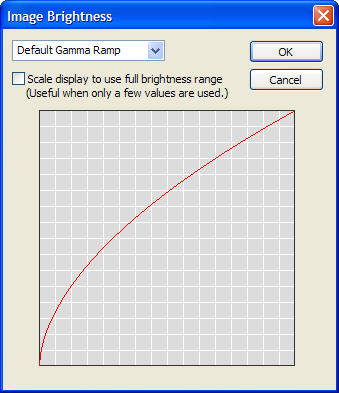

The Image Brightness window enables the user to control the gamma ramp of the images displayed on the PC.

The drop-down list in the upper-left corner enables the user to choose between the following:
By selecting the check box, the user scales the display to use the full brightness range. This can be useful when looking at just the alpha of a surface that has only a few distinct alpha values.